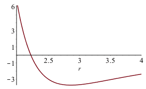

概要
EAM
EAM(Embedded atom method)は1980年代に盛んに使われるようになった経験的原子間ポテンシャルである．
エネルギー表記
EAMは原子$i$のエネルギーを
E_i = \sum _ j\phi \left( r_{{j}} \right) + f(\rho)
と表記する．右辺第1項は単なる2体間の相互作用を表わす． 右辺第2項が多体項と呼ばれるEAMに特徴的な項である． これによって原子空孔を初め多くの金属物性を うまく表現することが可能となった．詳しくは西谷・赤本参照．
さて，$r_j$はこの場合原子$j$との距離を意味しており，$E_i$は原子$i$の周りの原子との和によって求まる．多体項は，一般的に
f(\rho) =\sqrt{\rho}=\sqrt {\sum_j h^2 \left( r_{{j}} \right) }
によって求められる．$\rho$は強結合(tight binding)の2次モーメント近似から，電子密度を表わすとされている．
具体例
for phi(r0)=-3.39, Ev=0.8, p=3.0 at r0=2.8577
A0,B0,P,POQ,Q:=69.1378255, 12.47431958, 2.148157653, 2.893854749, 0.7423170267;
-3.39*32;
-108.48
n:=12;
ene:=r->n*A0*exp(-P*r);
h:=r->B0*exp(-Q*r);
rho:=r->12*h(r)^2;
plot(ene(r)-sqrt(rho(r)),r=2..4);

r0:=fsolve(diff(ene(r)-sqrt(rho(r)),r),r=3);
2.857701344
evalf(subs(r=r0,ene(r)-sqrt(rho(r))));
-3.390000002
E_i = \sum _ j\phi \left( r_{{j}} \right) + \h \left( r_{{j}} \right)
LJ
LJ(Lennard-Jones)はもっとも簡単な2体のポテンシャル．
エネルギー表記
具体例
A0:=1.587401051*0.7071067812/2.857701314;
E0:=-1*4.0/12.0;
A:=18.19007708;
B:=89.22765864;
phi:=r-> 12*(-A*(1/r**3)+B*(1/r**5));
r0:=fsolve(diff(phi(r),r),r=3);
2.859281101
phi(r0);
-3.735125644
